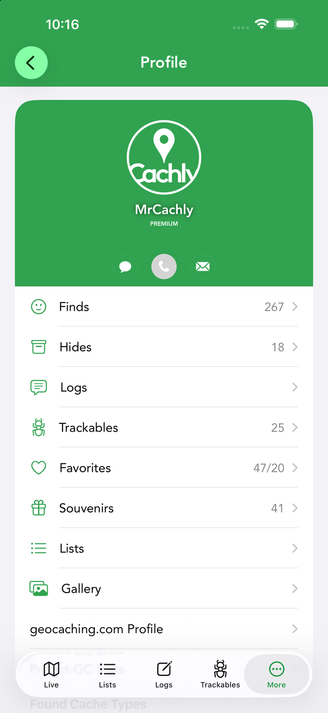
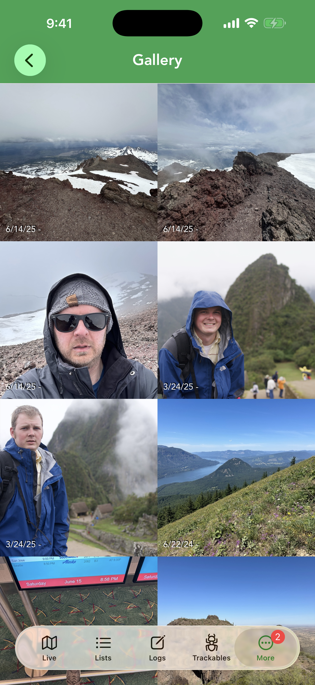
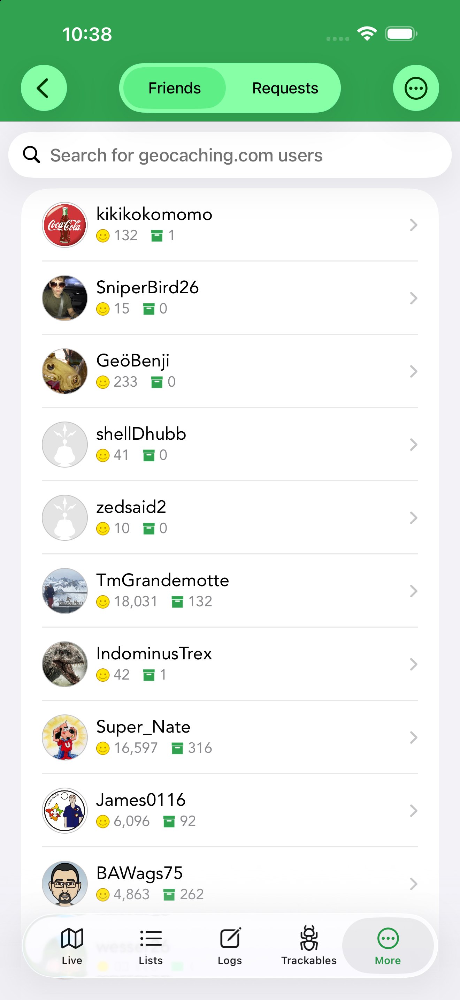
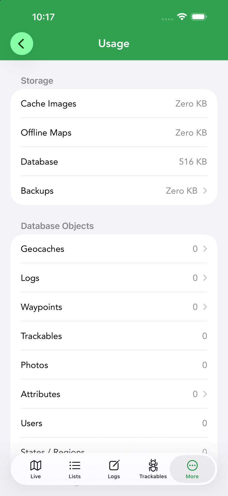

Profile & Social
The profile area gathers your geocaching identity — your stats and finds, your friends, your souvenirs, notifications, and a look at your API usage.




Your profile & stats
Tap your name at the top of the More tab to open your profile — your geocaching identity in one screen, pulled from Geocaching.com. Your avatar and username sit at the top, with a PREMIUM badge if you hold a premium membership, followed by a Found Cache Types chart breaking your finds down by cache type. In between, rows drill into every part of your record:
- Finds — opens a map of everything you’ve found, so you can see your caching footprint at a glance.
- Hides — the caches you own.
- Logs — your log history.
- Trackables — the trackables you own, grouped by type (Travel Bug Dog Tags, geocoins and so on) with a count for each.
- Favorites — your favorite points, shown as remaining/awarded.
- Souvenirs — your earned souvenirs.
- Lists — your geocaching.com lists.
- Gallery — every photo you’ve attached to a log, grouped by date.
- geocaching.com Profile and Project-GC Stats — open your full web profile and Project-GC statistics.
From here you can also re-authenticate if your Geocaching.com session expires.
Friends
More › Friends lists your geocaching.com friends with their find counts; tap one to open their profile, and use the Friends / Requests switch at the top to review and accept pending friend requests. Because of privacy rules, friends only appear if they’ve authorized sharing — both you and each friend must check “Allow Authorized Developer applications…” under geocaching.com › Authorizations. Cachly explains this with a prompt the first time you open Friends, and offers a shortcut to view or manage your authorizations. If you don’t see everyone, that authorization is usually why.
Phone, text or message a cacher
From a user profile, a friend, or a log author, you can phone, send a geocaching.com message, or text them. Phone/text require the cacher’s caching name to be stored in the Company or Nickname field of an iOS contact (matched case-insensitively); this needs Contacts permission. Email works for any profile.
Message Center
More › Message Center opens geocaching.com’s messaging system right inside Cachly, so you can read and reply to messages from other cachers without leaving the app.
Souvenirs
Souvenirs are the virtual badges Geocaching.com awards for finds in particular places or during events. Cachly lists the souvenirs you’ve earned with the date each was awarded; tap one for its artwork and details.
Notification center
The notification center collects activity relevant to you in one place.
D/T Grid
More › D/T Grid shows a 9×9 Difficulty/Terrain matrix of your finds. See the dedicated D/T Grid page.
Usage & storage
If you’re ever wondering why Cachly is using so much space — or how much API allowance you have left — More › Usage is the answer. It has three parts:
- Storage — how much space Cache Images, Offline Maps, the Database and Backups occupy. The rows are tappable for cleanup: delete all images, delete offline maps, or delete backups to reclaim space.
- Database Objects — counts of what’s stored on the device: geocaches, logs, waypoints, trackables, photos, attributes, users and state/county regions.
- API Limits — Geocaching.com limits how many caches apps can request per period, with separate quotas for lite (basic) and full geocache data. Cachly shows how many of each you have remaining and the time until the count resets — useful if you do heavy searching or large downloads and want to pace yourself.